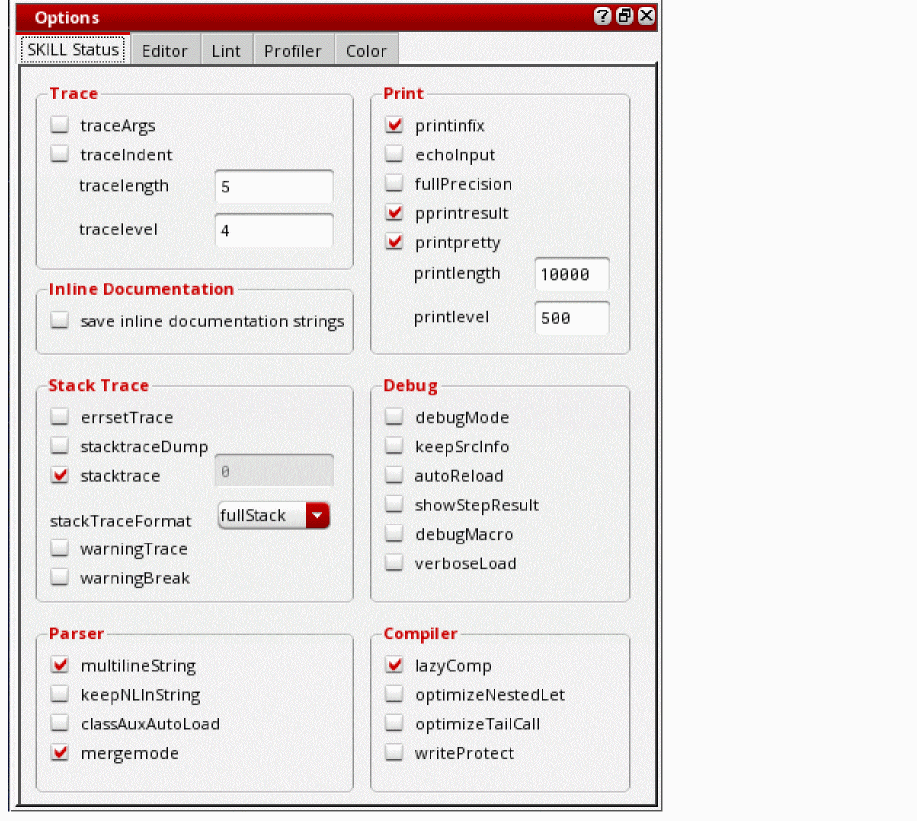
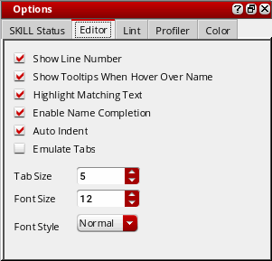
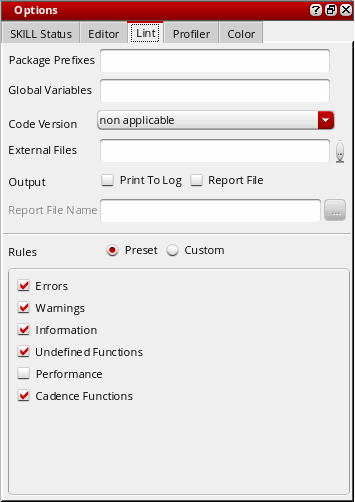
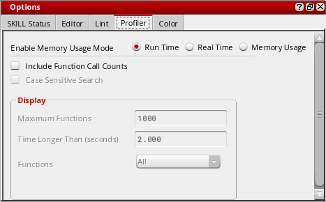
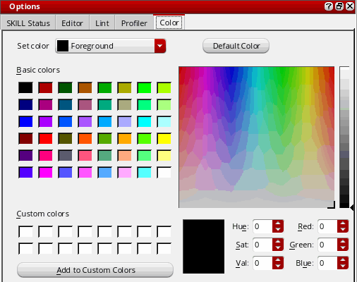

Setting SKILL IDE Options
SKILL IDE provides a number of options for customizing the behavior of SKILL IDE elements. The following options are accessible through the Options menu:
-
SKILL Status
Lets you customize the status settings for the SKILL debugger, compiler, parser, printer, stack, and trace. To set the SKILL Status options:
Choose Options – SKILL Status.
The Options assistant displays with SKILL Status as the default tab. -
Editor
The Editor command lets you customize the settings for the SKILL IDE editor. To customize the behavior of the SKILL IDE editor:
Choose Options – Editor
The Options assistant displays with Editor as the default tab. -
Lint
The Lint command lets you set the Lint parameter values before running the Lint tool. To set the Lint parameters:
Select Options – Lint or click (Lint Options) in the in the Lint Manager assistant window or (Options) in the Edit toolbar.
The Options assistant displays with Lint as the active tab. -
Profiler
The Profiler command lets you define the type of data you want the Profiler to collect and display. To set the Profiler Options for collecting data, before running the Profiler:
Choose Options – Profiler. You can also click (Profiler Options) in the toolbar displayed in the Profiler assistant window.
The Options form displays with Profiler as the default tab. -
Color Settings
The Color Settings command lets you customize the color settings for the SKILL IDE editor window. To set the color preferences for various elements of the SKILL IDE editor window:
Choose Options — Color Settings.
The Options assistant displays with Color as the default tab.

Related Topics
Customizing the Color Settings
Return to top